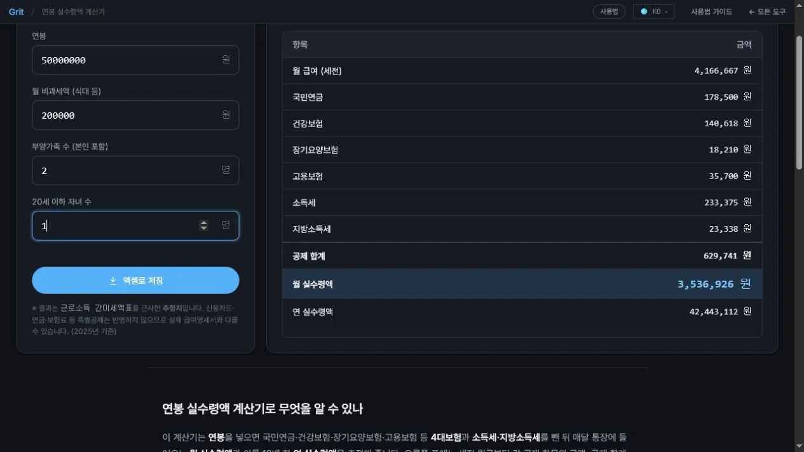

연봉 실수령액 계산기
연봉·비과세·부양가족을 넣으면 4대보험과 세금을 빼고 월 실수령액을 추정합니다.
값 입력
원
원
명
명
※ 결과는 근로소득 간이세액표를 근사한 추정치입니다. 신용카드·연금·보험료 등 특별공제는 반영하지 않으므로 실제 급여명세서와 다를 수 있습니다. (2025년 기준)
공제 내역 (월 기준, 추정치)
| 항목 | 금액 |
|---|
연봉·비과세·부양가족을 넣으면 4대보험과 세금을 빼고 월 실수령액을 추정합니다.
※ 결과는 근로소득 간이세액표를 근사한 추정치입니다. 신용카드·연금·보험료 등 특별공제는 반영하지 않으므로 실제 급여명세서와 다를 수 있습니다. (2025년 기준)
| 항목 | 금액 |
|---|
연봉, 월 비과세액(식대 등), 부양가족 수(본인 포함), 20세 이하 자녀 수를 입력하세요.
입력하는 즉시 국민연금·건강보험·장기요양·고용보험·소득세·지방소득세와 월/연 실수령액이 표로 갱신됩니다.
‘엑셀로 저장’을 누르면 공제 내역을 엑셀 파일로 내려받습니다. 소득세는 근로소득 간이세액표를 근사한 추정치이며 특별공제는 빠져 있어 실제와 다를 수 있습니다.

이 계산기는 연봉을 넣으면 국민연금·건강보험·장기요양보험·고용보험 등 4대보험과 소득세·지방소득세를 뺀 뒤 매달 통장에 들어오는 월 실수령액과 이를 12배 한 연 실수령액을 추정해 줍니다. 오른쪽 표에는 세전 월급부터 각 공제 항목의 금액, 공제 합계, 실수령액까지 한 줄씩 나오므로 “내 월급에서 무엇이 얼마씩 빠지는지”를 항목별로 확인할 수 있습니다. 이직 협상, 연봉 인상 후 실수령액 변화, 대출 상환 여력 점검 같은 상황에서 세후 기준으로 빠르게 가늠할 때 유용합니다.
입력한 연봉·부양가족 정보는 서버로 전송되지 않고 브라우저 안에서만 계산됩니다. 급여 정보를 넣어도 외부로 나가지 않습니다.
4대보험료는 요율이 비교적 명확해 실제와 크게 다르지 않지만, 소득세는 근로소득 간이세액표를 근사한 추정치입니다. 실제 원천징수는 회사가 적용하는 간이세액표와 연말정산 반영 방식에 따라 달라지고, 이 계산기는 신용카드·의료비·보험료·연금저축 같은 특별공제를 반영하지 않습니다. 따라서 실제 급여명세서와 몇 만 원 단위 차이가 날 수 있습니다. 매달 떼인 세금은 이듬해 연말정산에서 최종 정산되므로, 공제 항목이 많은 사람은 실제 부담 세액이 여기 표시값보다 더 낮아질 수 있습니다. 공제 내역은 엑셀로 저장해 협상 자료나 가계 예산표에 붙일 수 있습니다.
표의 항목을 하나씩 이해하면 내 월급 구조가 보입니다. 국민연금은 나중에 노령연금으로 돌려받는 성격이라 순수한 세금과는 다르고, 건강보험에는 그 일부로 장기요양보험이 함께 붙습니다. 고용보험은 실업급여 등의 재원이며, 이 넷을 흔히 4대보험이라 부릅니다(산재보험은 전액 회사 부담이라 실수령액에 영향이 없습니다). 그 아래 소득세와 그 10%인 지방소득세가 세금 부분입니다. 실수령액을 늘리는 가장 확실한 방법은 연봉 자체를 올리는 것이지만, 비과세 식대를 활용하거나 부양가족·자녀 공제를 빠짐없이 반영하는 것만으로도 월 실수령액이 조금 달라집니다. 연봉이 같아도 부양가족이 많은 사람의 실수령액이 더 높게 나오는 이유가 여기 있습니다. 이직을 저울질할 때는 제시 연봉을 그대로 넣어 세후 월급을 비교하면 체감 차이를 훨씬 정확하게 판단할 수 있습니다.
실제 급여명세서와 왜 다른가요?
소득세를 간이세액표로 근사하고 특별공제(신용카드·의료비·연금 등)를 빼지 않기 때문입니다. 4대보험은 요율이 명확해 거의 일치하지만, 세금 부분은 회사·개인 상황에 따라 차이가 납니다.
연말정산 환급도 계산되나요?
아니요. 이 도구는 매달 원천징수 기준의 실수령액만 추정합니다. 연말정산으로 돌려받거나 더 내는 금액은 개인 공제 항목에 따라 달라 별도로 확인해야 합니다.
비과세액은 왜 넣나요?
식대 등 비과세 항목은 보험료·세금 계산의 기준(과세 대상)에서 빠집니다. 비과세액을 넣으면 과세 기준이 낮아져 공제가 줄고 실수령액이 소폭 늘어납니다.
어느 연도 기준인가요?
2025년 4대보험 요율과 소득세율을 기준으로 계산합니다. 요율은 해마다 바뀔 수 있으니 정확한 금액은 급여 부서나 공식 계산기로 확인하세요.
※ 결과는 2025년 기준 추정치로, 특별공제·연말정산·회사별 규정에 따라 실제 급여명세서와 다를 수 있습니다. 정확한 금액은 소속 회사·관할 기관에 확인하세요.